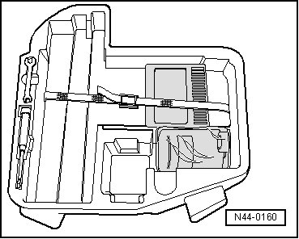

Tire Repair Kit
Tire Repair Kit
Vehicles are equipped with either a spare tire or a break down set, depending on equipment.
The tire repair kit is located in the luggage compartment, where the spare tire would be stored if the vehicle were equipped with one. It contains a bottle of tire sealant next to the compressor.
